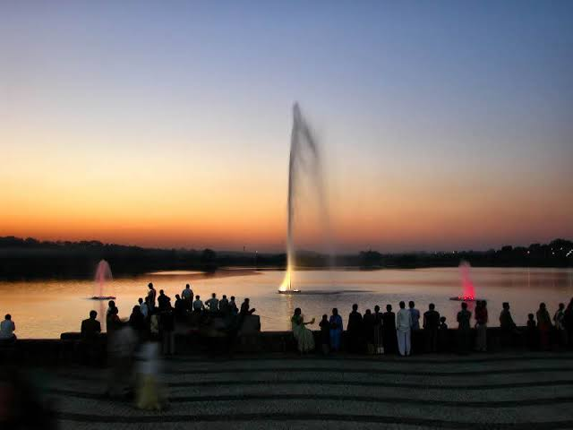

Deekshabhoomi is one of the most important Buddhist pilgrimage and historical sites in Nagpur, Maharashtra. It is especially significant in the history of Dr. B. R. Ambedkar and the Navayana Buddhist movement.
The Historic Event:Dr. Babasaheb Ambedkar and his wife converted to Buddhism here along with hundreds of thousands of followers, sparking the Neo-Buddhist movement in India.
The Stupa:Inspired by the famous Sanchi Stupa, the modern granite and marble structure was completed and inaugurated on December 18, 2001. It is one of the largest hollow Buddhist stupas in the world.
Major Festival: Millions of pilgrims gather here every year on Dhamma Chakra Pravartan Din (and October 14) to celebrate the mass conversion anniversary.
Address: Deeksha Bhoomi Nagpur is located on S Ambazari Rd, Abhyankar Nagar, Nagpur, Maharashtra 440020.
Timings: Open every day from 07:00 AM to 08:00 PM.
Entry Fee:Free for all visitors


Name Origin:"Tekdi" means a small hill in Marathi, and the temple is situated atop the Sitabuldi hillock, earning it the local name Tekadicha Ganpati (Ganpati of the hills).
The Idol: The presiding deity is a Swayambhu (self-existent/self-manifested) idol, traditionally believed by devotees to be growing in size over time.
Timings: Open daily from 5:30 AM to 9:00 PM.
Offerings: Modak sweets are distributed as a divine prasad after daily artis (prayers held at 6:30 AM, 12:30 PM, and 6:30 PM).
Crowds:Thousands of devotees visit daily, with numbers surging significantly on Chaturthi and Ekadashi days.
Discovery: Legend and local accounts state that the ancient idol was discovered beneath a Shami tree on the hill. Some historical local lore connects its rediscovery to ground excavations or dynamite blasts on the Sitabuldi hill during the late 19th century (around 1875/1800s).
Early Shrine:For many decades, the sacred spot remained an ordinary, small open-air platform protected only by a simple tin shed put up by early devotees around 1935.
Modern Construction:The land initially belonged to the military. After acquiring adjacent land parcels through the Ministry of Defence in the 1960s and 1970s, organized rebuilding began under devotee committees (led by figures like Ganpatrao Joshi) in 1978.
Completion:The structured modern temple we see today was completed and opened in 1984, funded through widespread public donations.
